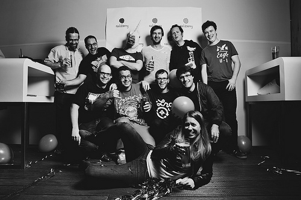

Zürich: EuRuKo 2013 candidate city
We want to host the next EuRuKo in Switzerland, the land of mysterious mountains, dreamy cheese and delicious chocolate.
We're a bunch of swiss Ruby developers who want to give back to the community. This is us being inspired by Railsberry, surprised by that girl and ready to host the event for you in our beautiful country.
Organizers & Supporters
If you see one of us at EuRuKo in Amsterdam, ask for chocolate!
Supporting Companies
Even some companies announced their support. Tweet @eurukozurich if we can count on you as well.